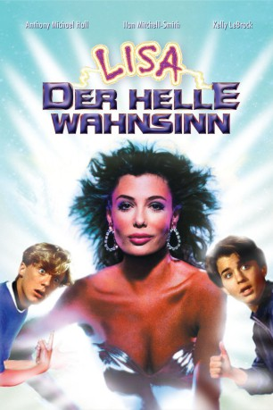

#2502 L.I.S.A. - Der helle Wahnsinn
Alternativ: Weird Science
 
 IMDB-Wertung: 6.6 / 10
IMDB-Wertung: 6.6 / 10  Metascore: 46
Metascore: 46 
Two unpopular teenagers, Gary Wallace and Wyatt Donnelly, fail at all attempts to be accepted by their peers. Their desperation to be liked leads them to "create" a woman via their computer. Their living and breathing creation is a gorgeous woman, Lisa, whose purpose is to boost their confidence level by putting them into situations which require Gary and Wyatt to act like men. On their road to becoming accepted, they encounter many hilarious obstacles, which gives the movie an overall sense of silliness.
Jahr: 1985
Dauer: 94 Minuten
FSK: 12
Land: USA Studio: Universal PicturesTonspuren: DTS - ,
Untertitel: Deutsch,
Auflösung: 1080p (1920x1040) Größe: 7178 MB
Genre: Komödie, Fantasy, Liebe
Regisseur:  John Hughes
John Hughes
Drehbuch: John Hughes, Al Feldstein, William M. Gaines
Soundtrack: Ira Newborn
Darsteller:
 Anthony Michael Hall als Gary Wallace
Anthony Michael Hall als Gary Wallace- Kelly LeBrock als Lisa
- Ilan Mitchell-Smith als Wyatt Donnelly
 Bill Paxton als Chet Donnelly
Bill Paxton als Chet Donnelly- Suzanne Snyder als Deb
 Judie Aronson als Hilly
Judie Aronson als Hilly Robert Downey Jr. als Ian
Robert Downey Jr. als Ian Robert Rusler als Max
Robert Rusler als Max Vernon Wells als Lord General
Vernon Wells als Lord General Michael Berryman als Mutant Biker
Michael Berryman als Mutant Biker John Kapelos als Dino
John Kapelos als Dino Wallace Langham als Art
Wallace Langham als Art- Mikul Robins als The Weenies
- Renee Props als The Weenies
- D'Mitch Davis als Bartender
- Mary Steelsmith als Girl in Bathroom
- Rick Le Fevour als Policeman
- Joe Gieb als Blob Operator
- Pamela Gordon als Wyatt's Mother
 Steve James als Guy at Table , uncredited
Steve James als Guy at Table , uncredited- John Simone als Pothead , uncredited
- Britt Leach als Al Wallace
- Barbara Lang als Lucy Wallace
- Ivor Barry als Henry Donnelly
- Ann Coyle als Carmen Donnelly
- Suzy J. Kellems als Gymnast
- Fred D. Scott als Bar Patron
- Vince Townsend Jr. als Bar Patron
- Chino 'Fats' Williams als Bar Patron
- Jill Whitlow als Perfume Salesgirl
- Theodocia Goodrich als Lingerie Saleswoman
- Johnny Timko als The Weenies
- Darren Harris als The Weenies
- Michael Cramer als The Weenies
- Todd Hoffman als The Weenies
- Robin Frohman als Girl in Bathroom
- Alison Carole Lowe als Girl in Upside Down Bathroom
- Kym Malin als Girl Playing Piano
- Jennifer Balgobin als Biker Girl
- Jeff Jensen als Metal Face
- Prince Hughes als Party Guest
- Rock A. Walker als Policeman
 Kevin Thompson als Blob Operator
Kevin Thompson als Blob Operator- Doug MacHugh als Wyatt's Father
- Phillip Borsos als Candy Bar Owner , uncredited
- Joyce Mandel als Woman in Bar , uncredited
- Robert Minkoff als Bit , uncredited
Datei: X:\1985\L.I.S.A. - Der helle Wahnsinn (1985, FSK12, 1920x1040).mkv seit 13.11.2015
Festplatte: HD 1980-1986
 Es gibt insgesamt 43 Filme in der Gruppe '1985'
Es gibt insgesamt 43 Filme in der Gruppe '1985'